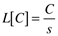
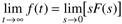

| [ Team LiB ] |
|
3.3 Introduction to Laplace TransformsMost control system analysis and design techniques are based on linear systems theory. Although we could develop these procedures using the state space models, it is generally easier to work with transfer functions. Basically, transfer functions allow us to make algebraic manipulations rather than working directly with linear differential equations (state space models). To create transfer functions, we need the notion of the Laplace transform. The Laplace transform of a time-domain function, f(t), is represented by L[f(t)] and is defined as The Laplace transform is a linear operation, so the Laplace transform of a constant (C) multiplying a time-domain function is just that constant times the Laplace transform of the function, The Laplace transforms of a few common time-domain functions are shown next. Exponential FunctionExponential functions appear often in the solution of linear differential equations. Here
The transform is defined for t > 0 (we also use the identity that ex+y = exey) So we now have the following relationship: DerivativesThis will be important in transforming the derivative term in a dynamic equation to the Laplace domain (using integration by parts), so we can write For an nth derivative, we can derive n initial conditions are needed: f(0),..., f(n – 1) (0) One reason for using deviation variables is that all of the initial condition terms in Equation (3.10) are 0, if the system is initially at steady-state. Time Delays (Dead Time)Time delays often occur owing to fluid transport through pipes, or measurement sample delays. Here we use q to represent the time delay. If f(t) represents a particular function of time, then f(t – q) represents the value of the function q time units in the past. We can use a change of variables, t* = t – q, to integrate the function. Notice that the lower limit of integration does not change, because the function is defined as f(t) = 0 for t < 0. So the Laplace transform of a function with a time delay (q) is simply e–qs times the Laplace transform of the nondelayed function. Step FunctionsStep functions are used to simulate the sudden change in an input variable (say a flow rate being rapidly changed from one value to another). A step function is discontinuous at t = 0. A "unit" step function is defined as and using the definition of the Laplace transform, so Similarly, the Laplace transform of a constant, C, is  PulseConsider a pulse function, where a total integrated input of magnitude P is applied over tp time units, as shown in Figure 3-3. Figure 3-3. Pulse function.The function is f(t) = P/tp for 0 < t < tp and f(t) = 0 for t > tp. The Laplace transform is ImpulseAn impulse function can viewed as a pulse function, where the pulse period is decreased while maintaining the pulse area, as shown in Figure 3-4. In the limit, as tp approaches 0, the pulse function becomes (using L'Hopital's rule) Figure 3-4. Concept of an impulse function.If we denote a unit impulse as f(t) = d, then the Laplace transform is Examples of common impulse inputs include a "bolus" (shot or injection) of a drug into a physiological system, or dumping a bucket of fluid or bag of solids into a chemical reactor. Other FunctionsIt is rare for one to derive the Laplace transform for a function; rather a table of known transforms (and inverse transforms) can be used to solve most dynamic systems problems. Table 3-1 presents solutions for most common functions. If you desire to transform a function from the time domain to the Laplace domain, then look for the time-domain function in the first column and write the corresponding Laplace domain function from the second column. Similarly, if your goal is to "invert" a Laplace domain function to the time domain, then look for the Laplace domain function in the second column and write the corresponding time-domain function from the first column. This notion of the inverse Laplace transform can be written For example Initial- and Final-Value TheoremsThe following theorems are very useful for determining limiting values in dynamics and control studies. The long-term behavior of a time-domain function can be found by analyzing the Laplace domain behavior in the limit as the s variable approaches zero. The initial value of a time-domain function can be found by analyzing the Laplace domain behavior in the limit as s approaches infinity.
The final-value theorem is  The initial-value theorem is It should be noted that these theorems only hold for stable systems. Example 3.2: Application of Initial- and Final-Value TheoremsFind the long-term and short-term behavior of the time-domain function, y(t), using the final- and initial-value theorems on the Laplace domain function Y(s) (we see later that this arises from a step input applied to a second-order process): The long-term behavior, y(t The short-term behavior, y(t The reader should verify that the time-domain function, y(t), can be found by applying Table 3-1 to find and that the values of y(t General Solution ProcedureTo obtain analytical solutions for differential equation-based models, the general procedure is composed of several steps.
It should be noted that chemical process systems are rarely described by an nth order differential equation. Usually, a set of n first-order differential equations is transformed to a single nth order equation, as shown in Example 3.3. Example 3.3: Second-Order Differential EquationConsider the following state space model of an isothermal CSTR (Module 5). where x1 and x2 represent the concentrations of two components (in deviation variable form) in an isothermal reactor; the initial conditions are x1(0) = x2(0) = 0. Solve for the output (concentration of component 2) response to a unit step input.
In Example 3.3 we solved for the coefficients (C1, C2, C3) by selecting values of s to minimize the multiplications performed during each step. An alternative is to solve for three equations in three unknowns by using various values of s (say s = 1, 2, and 3, for example) in Equation (3.20). Differential equations textbooks, such as Boyce and DiPrima (1992) present many examples of applications of Laplace transforms to solve differential equations. In practice, it is rare for process engineers to seek analytical solutions to differential equations; it is far easier to solve these numerically. The primary goal of this section was to provide background material to understand the transfer functions and dynamic responses shown in the next section. |
| [ Team LiB ] |
|
 ), is found using the
), is found using the